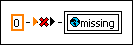

A global variable on the block diagram is attempting to access an item that does not exist in the associated global VI. Most likely, this error occurred because the global VI was changed after you placed the global variable reference on the block diagram and selected the item. LabVIEW indicates this error by displaying the global reference in black.
To correct this error, find the global reference on the block diagram by clicking the Show Error button in the Error list window. Right-click the reference and select Select Item from the shortcut menu to select a new item, or select Open Front Panel from the shortcut menu to edit the global VI associated with this reference. If you choose to edit the global VI, you should add a control that has the same name as the item you selected in the global variable reference.
When you correct the error, the global reference appears with the color of the selected item data type.